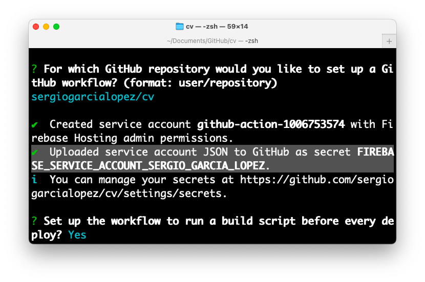
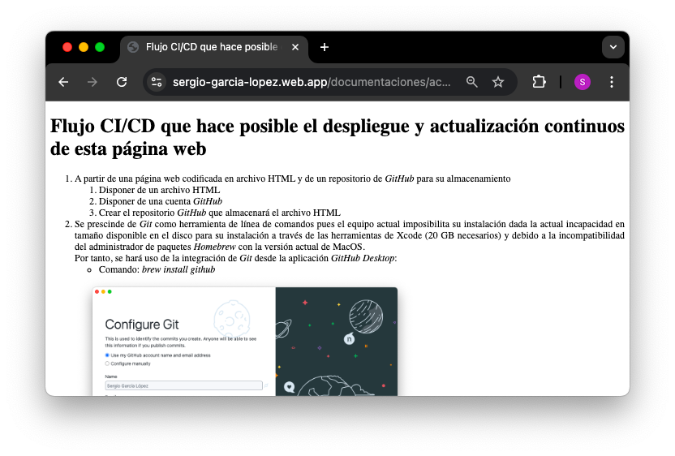

Flujo CI/CD que hace posible el despliegue y actualización continuos de esta página web
-
A partir de una página web codificada en archivo HTML y de un repositorio de GitHub para su
almacenamiento
- Disponer de un archivo HTML
- Disponer de una cuenta GitHub
- Crear el repositorio GitHub que almacenará el archivo HTML
-
Se prescinde de Git como herramienta de línea de comandos pues el equipo actual imposibilita su
instalación dada la actual incapacidad en tamaño disponible en el disco para su instalación a través de las
herramientas de Xcode (20 GB necesarios) y debido a la incompatibilidad del administrador de paquetes
Homebrew con la versión actual de MacOS.
Por tanto, se hará uso de la integración de Git
desde la aplicación GitHub Desktop:
- Comando: brew install github

-
Una vez configurado GitHub Desktop y especificado el directorio local del repositorio, a saber: /Users/ss/Documents/GitHub/cv; copiamos todo contenido en la
ruta local /Users/ss/CV o directorio fuente (que incluye el archivo HTML) y lo
pegamos en el directorio local del repositorio, valga la redundancia: /Users/ss/Documents/GitHub/cv. Los cambios son detectados en
automático y es posible hacer commit:

-
Previo a realizar el primer commit y como requisito para cualquier operación involucrada en el proceso de integración/despliegue continuos, es necesario:
- Disponer de cuenta Firebase y crear un proyecto Firebase el cual incluye de manera predeterminada un servidor web de recursos estáticos que dará al archivo HTML disponibilidad vía Internet
- Disponer de la herramienta de línea de comandos Firebase, iniciar sesión con el comando firebase login y configurar Firebase Hosting en la ruta del repositorio local. Véase la documentación sobre el comando firebase init hosting:github
- Una vez asociado Firebase Hosting con la cuenta de GitHub se ha cargado la variable secret en la configuración del respositorio en GitHub con la cuenta JSON encriptada que habilita la carga del contenido del repositorio en el servidor web de recursos estáticos de Firebase. Véase la documentación sobre el GitHub Action para el despliegue hacia Firebase Hosting

-
Una vez creado el GitHub Action disponible en el repositorio con el nombre deploy.yml, después de cada commit se actualizará la presente página web prescindiendo de llamar al comando deploy de Firebase cada vez que existen cambios, además, integrando la utilización de los comandos de las herramientas Git y Firebase en una sola acción i.e. el commit desde el entorno gráfico GitHub Desktop:
